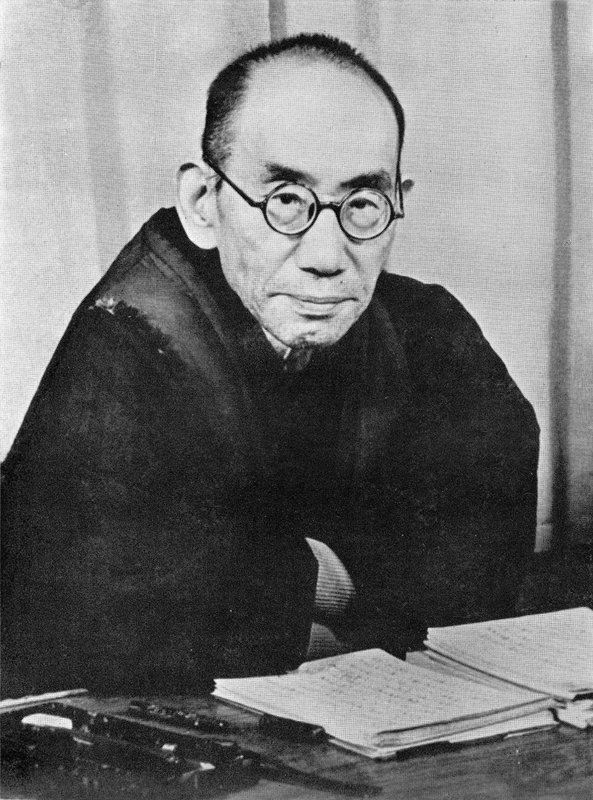
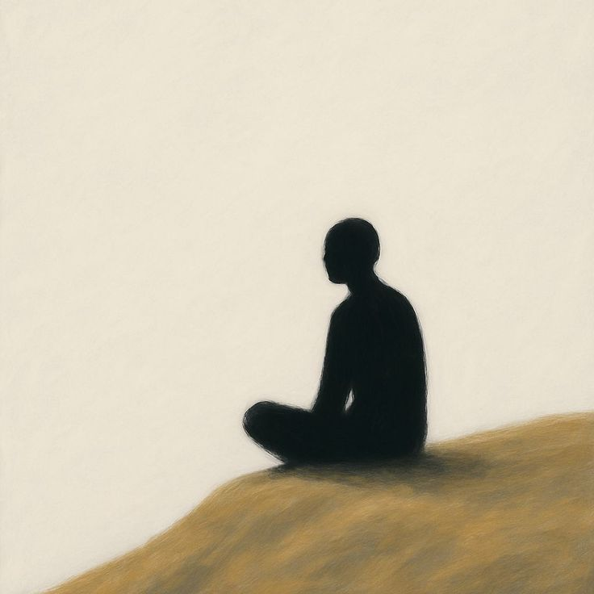

Who Was Nishida Kitarō?
Nishida Kitarō (1870–1945) was one of the most important Japanese philosophers of the twentieth century and the central founding figure associated with the Kyoto School of philosophy. His work brought Japanese and East Asian philosophical traditions into sustained conversation with modern Western philosophy, helping to establish modern Japanese philosophy as a field capable of engaging systematically with questions traditionally associated with both intellectual worlds.
Born in Ishikawa Prefecture, Nishida studied philosophy at Tokyo Imperial University before pursuing an academic career that included his long association with Kyoto Imperial University. His teaching and philosophical influence helped shape a generation of major thinkers, including figures such as Tanabe Hajime and Nishitani Keiji. Although the term Kyoto School later came to describe a broader and internally diverse philosophical movement, Nishida remained its decisive intellectual starting point.
Nishida's philosophy developed through several stages. His early thought focused particularly on pure experience and the relationship between immediate experience, consciousness, and reality. In his influential early work An Inquiry into the Good (1911), he argued that immediate experience should not initially be understood as a division between a knowing subject and an external object, making the problem of experience central to his philosophical project.
His later philosophy developed the concepts of basho, or "place," and absolute nothingness, while increasingly examining the relationship between individual persons, history, action, and the world. These ideas represented an attempt to move beyond philosophical models that treated the self or consciousness as an isolated substance. Nishida instead explored the more fundamental field or context within which subjects and objects, thought and reality, could arise in relation to one another.
Nishida was influenced by both Western philosophers and Asian traditions, including Buddhist and East Asian thought. His philosophy should therefore not be reduced simply to Zen Buddhism, despite the importance of Buddhist ideas to his intellectual background. Instead, he attempted to construct a systematic philosophy in which questions about experience, selfhood, reality, nothingness, religion, action, and history could be considered across philosophical traditions. This ambitious synthesis made Nishida a foundational figure in modern Japanese philosophy and an important thinker in global philosophy.
Nishida Kitarō: Quick Facts
- Name — Nishida Kitarō
- Born — 1870
- Died — 1945
- Nationality — Japanese
- Known for — Modern Japanese philosophy and the Kyoto School
- Major concepts — Pure experience, self-awareness, basho, logic of place, absolute nothingness, and action-intuition
- Philosophical interests — Metaphysics, epistemology, consciousness, religion, ethics, aesthetics, history, and culture
- Major early work — An Inquiry Into the Good
- Philosophical tradition — Modern Japanese philosophy and Kyoto School philosophy
- Historical importance — He helped establish philosophy as a modern academic discipline in Japan while developing an original dialogue between Western philosophy and East Asian thought.
Nishida Kitarō and the Birth of Modern Japanese Philosophy

Nishida was born in 1870, during a period when Japan was undergoing major political, social, and intellectual transformation. Following the Meiji Restoration of 1868, the country rapidly encountered European and American systems of science, education, politics, and philosophy. Japanese intellectuals increasingly studied thinkers such as Kant, Hegel, and other Western philosophers while attempting to understand how these new intellectual resources could be related to Japan's own religious and philosophical traditions.
Nishida became part of this new philosophical environment while also engaging deeply with Japanese and broader East Asian intellectual traditions. His work therefore developed at a point of contact between different philosophical worlds rather than within a purely European or purely Buddhist framework. He did not regard philosophical modernity simply as the replacement of older traditions by Western ideas, but sought to develop concepts capable of addressing fundamental problems through a genuinely original philosophical vocabulary.
The emergence of modern academic philosophy in Japan created new institutions in which Western philosophical methods could be studied systematically. Nishida studied philosophy at Tokyo Imperial University and later became associated with Kyoto Imperial University, where he taught for many years. His academic career gave him an important position within the developing Japanese university system and helped establish Kyoto as one of the country's major centers for philosophical research.
Nishida's students, colleagues, and intellectual successors subsequently developed their own philosophical positions, forming the tradition now widely known as the Kyoto School. This was never a single doctrine accepted uniformly by all of its members, but Nishida's questions about experience, self-awareness, nothingness, history, and religion provided many of its central starting points. His work therefore occupies a foundational position in the history of modern Japanese philosophy and its encounter with global thought.
Why Is Nishida Kitarō Important?
Nishida is important because he developed an original philosophical vocabulary for examining problems that had been central to both Western and East Asian thought. Rather than simply choosing between "Eastern" and "Western" philosophy, he attempted to place different traditions into philosophical dialogue. His project involved serious engagement with modern European philosophy while also drawing upon intellectual resources shaped by Buddhist and East Asian traditions.
His work addressed questions about the nature of experience, the relationship between subject and object, consciousness, reality, nothingness, action, history, religion, and the self. These were not isolated topics in his philosophy. Nishida repeatedly attempted to show how apparently separate philosophical problems were connected, particularly through his effort to understand reality without treating the individual subject as a completely independent starting point.
Nishida is also important because his philosophy changed considerably over the course of his career. His early concept of pure experience gave way to increasingly complex analyses of self-awareness, the logic of place, absolute nothingness, action-intuition, and the historical world. This development makes his work one of the most ambitious systematic philosophical projects produced in twentieth-century Japan.
Nishida's importance extends beyond Japan. His philosophy has become a major subject of scholarship in comparative philosophy, Buddhist philosophy, metaphysics, phenomenology, philosophy of religion, and modern Japanese intellectual history. He remains especially important for discussions about whether philosophical concepts developed within different cultural traditions can enter into genuine dialogue without simply reducing one tradition to the categories of another.
What Did Nishida Kitarō Believe?
Nishida's philosophy changed significantly throughout his career, so there is no single doctrine that adequately represents everything he believed. His early philosophy emphasized pure experience, while his middle and later periods increasingly developed the concepts of basho, absolute nothingness, historical reality, dialectical relations, and action-intuition. Understanding Nishida requires attention to these different stages rather than treating his philosophy as a fixed system that remained unchanged throughout his life.
A recurring concern throughout his philosophy was the relationship between apparently opposed elements such as subject and object, individual and world, knowing and acting, and being and nothingness. Nishida attempted to understand these oppositions without simply reducing one side to the other. Instead, he explored whether opposing terms might be intelligible only within a deeper field of relations that makes their distinction possible.
Nishida also rejected the idea that philosophy must begin exclusively from an isolated consciousness confronting an external world. His early thought investigated immediate experience before the conceptual division of subject and object, while his later philosophy increasingly examined the wider structures within which persons, objects, actions, and historical realities come into relation with one another.
His mature philosophy therefore became strongly concerned with relationality, self-negation, historical existence, and the ways in which individuals participate in and are shaped by the world. Yet Nishida did not simply dissolve the individual into an impersonal whole. One of the continuing problems of his later thought was how genuinely distinct individuals can exist within a historical and relational reality that exceeds any individual perspective.
What Is Pure Experience in Nishida's Philosophy?
Pure experience is one of the concepts most closely associated with Nishida's early philosophy. He developed the idea most famously in his first major philosophical work, An Inquiry Into the Good, originally published in 1911. The concept was central to his attempt to identify a fundamental level of experience that precedes many of the distinctions ordinarily used in philosophical accounts of consciousness and knowledge.
Nishida's concept challenges the assumption that experience begins with a completely separate subject observing an external object. In immediate experience, he argued, the distinction between subject and object has not yet been fully established in reflective thought. The later division between a knowing "I" and a known object is therefore not necessarily the most fundamental description of how experience is originally given.
For example, when a person immediately sees a color or hears a sound, the experience occurs before the person steps back and conceptually divides the situation into "I am experiencing this object." Nishida used pure experience to describe this more immediate level of experience. The point was not merely that people sometimes forget to think about themselves, but that reflection introduces distinctions that may not characterize experience in its most direct form.
Nishida's early account was influenced in part by his engagement with modern psychology and with thinkers such as William James, although Nishida developed the concept within his own broader philosophical project. He was interested in whether consciousness and reality could be understood from a more fundamental starting point than the familiar opposition between an inner mental world and an external material one.
Pure experience became the foundation for Nishida's early attempt to understand consciousness, knowledge, reality, and the relationship between the experiencing self and the world. In his later philosophy, however, he moved beyond aspects of this early formulation and became increasingly concerned with self-awareness, relational structures, and the logic of place. Pure experience therefore marks the beginning of Nishida's philosophical development rather than the final form of his mature system.
Nishida Kitarō on Self-Awareness and Consciousness
Nishida's philosophy increasingly turned toward the problem of self-awareness. He questioned how the self can know itself without simply becoming another object observed from outside. If consciousness treats itself exactly as it treats an external object, an important problem arises: who or what is performing the act of knowing? Nishida explored self-awareness in order to understand this reflexive character of consciousness more deeply.
In his discussions of self-awareness, Nishida increasingly moved away from explanations that treated the self as a fixed substance existing behind experience. Instead, he examined the self as something revealed through its own activity and reflexive structure. Self-awareness was therefore not merely one psychological event among others, but an important philosophical problem concerning how consciousness can be present to itself while remaining actively engaged with reality.
This development also represented an important transition from his earlier philosophy of pure experience. Nishida came to believe that immediate experience alone could not adequately explain all the structures involved in consciousness, reflection, universality, and knowledge. His investigations of self-awareness therefore became part of a broader search for a philosophical framework capable of explaining both immediate experience and reflective thought.
Nishida's account of self-awareness ultimately forms part of his broader attempt to overcome a rigid division between subject and object. The self is not simply a detached observer standing outside reality; it is situated within a wider field of relations and activity. This concern would later contribute to his development of basho, or place, through which he sought to understand the broader context in which subjects and objects can arise at all.
What Is Basho? Nishida Kitarō's Logic of Place
One of Nishida's most important later concepts is basho, a Japanese term commonly translated as "place" or "topos." Nishida developed this idea as an alternative to philosophical approaches that explain reality primarily in terms of substances or isolated objects. The question of basho asks not simply what a thing is, but within what more fundamental field or context a thing can exist and become intelligible.
The idea of place asks about the broader field or context within which things exist and become intelligible. Rather than treating subject and object as completely independent entities, Nishida sought to understand both within a more comprehensive relational context. In this sense, "place" refers to a philosophical structure that contains or makes possible distinctions without itself being merely another object located alongside the things it encompasses.
This approach eventually became known as Nishida's logic of place. The concept developed throughout his middle period and became central to his attempt to explain how different levels of reality and experience are related. Nishida used increasingly complex accounts of place and universality in order to investigate how individual things, conscious acts, and broader forms of reality might be understood without reducing everything to a single substance.
Basho should therefore not be understood merely as a physical location. In Nishida's philosophy, "place" functions as a philosophical concept concerning the field or context within which beings, consciousness, and relations are situated. His use of the term was intended to challenge philosophical assumptions that begin with independently existing entities and only later ask how those entities become related to one another.
The development of basho eventually led Nishida toward his mature concept of absolute nothingness. If ordinary things and conscious subjects exist within broader contexts, Nishida asked whether there is an ultimate "place" that cannot itself be treated as one determinate being among others. His answer became central to the distinctive metaphysical language of his later philosophy.
What Is Absolute Nothingness in Nishida's Philosophy?

Absolute nothingness is perhaps the concept most strongly associated with Nishida's mature philosophy. The term can be misleading if it is understood simply as "nothing exists." Nishida was not describing the disappearance of reality into an empty void. Rather, he was attempting to formulate a philosophical concept capable of thinking beyond the ordinary opposition between determinate beings and their mere absence.
Nishida's absolute nothingness is not merely an empty void or the absence of being. Instead, he used the concept to describe an ultimate philosophical "place" that is not itself another determinate thing standing outside the world. Because it cannot be understood as one being among other beings, absolute nothingness functions in his mature thought as a way of questioning whether reality can be grounded in a final substance or object.
In this framework, being and nothingness are not treated as two independent substances. Absolute nothingness provides a way of thinking beyond their simple opposition and of understanding how apparently opposed aspects of reality can exist in relation. Nishida's terminology is therefore dialectical: he repeatedly investigates how distinctions can remain real without being completely self-contained or independent of the relations within which they appear.
The concept also became closely connected with Nishida's ideas about self-negation and the self. The individual cannot, in his mature philosophy, be understood as an absolutely self-sufficient substance. Individual existence takes place within relations that exceed the individual, and Nishida used the language of self-negation to explore how the self can transcend a narrowly ego-centered understanding of its own existence.
Nishida's use of nothingness was influenced by Buddhist and East Asian philosophical resources, but he developed the concept through an extended engagement with modern Western philosophy, including questions raised by Kant, Hegel, and other philosophers. It should therefore not simply be equated with any single Buddhist doctrine. Absolute nothingness belongs to Nishida's own evolving philosophical system and remains one of the most difficult and extensively debated concepts in modern Japanese philosophy.
Nishida Kitarō and Zen Buddhism
Nishida is frequently described in popular discussions as a philosopher of Zen Buddhism, but this description requires qualification. Zen and broader Mahayana Buddhist ideas were important intellectual resources for Nishida, and his personal engagement with Zen practice formed part of his intellectual background. Yet his philosophy cannot be reduced to a simple restatement of Zen teachings or treated as a traditional Buddhist doctrine expressed in modern philosophical language.
Nishida attempted to formulate philosophical arguments using concepts and methods that could engage both East Asian traditions and modern Western philosophy. His concept of absolute nothingness, for example, has important connections with Buddhist discussions of emptiness, non-substantiality, and non-duality, but Nishida developed it through his own systematic engagement with problems of logic, consciousness, metaphysics, and the relation between individuals and reality.
His work also engaged with Western thinkers such as William James, Kant, Hegel, Fichte, Bergson, and others. These engagements were not merely decorative references added to an otherwise Buddhist philosophy. Nishida seriously confronted problems inherited from modern European and American thought and repeatedly revised his own terminology in response to those philosophical challenges.
For this reason, it is more accurate to understand Nishida as a modern Japanese philosopher whose work emerged from multiple intellectual traditions. Buddhist thought provided important conceptual and spiritual resources, while Western philosophy supplied many of the questions and conceptual frameworks with which he worked. This combination is one reason Nishida became such an important figure in comparative and cross-cultural philosophy.
Nishida Kitarō on the Self and the World
A central problem in Nishida's philosophy is the apparent separation between the self and the world. Modern philosophy often begins with a knowing subject that encounters an external object. Nishida questioned whether this division is as fundamental as it first appears. His philosophical development can largely be read as a series of attempts to understand how self and world arise within relations that are more fundamental than their apparent separation.
His early concept of pure experience attempted to describe a level of experience before the subject-object distinction. His later philosophy approached the same problem through basho, absolute nothingness, historical reality, and dialectical relationships. Although his terminology changed, the underlying question remained: how can the distinctions that structure ordinary experience be understood without assuming that they exist as completely isolated realities?
Nishida's mature philosophy does not simply erase the distinction between self and world. Instead, it emphasizes that individuals are formed through relations with other individuals, things, and the historical world in which they live. The individual is genuinely distinct, yet that individuality is not created in complete isolation from the social, material, cultural, and historical conditions through which human life takes shape.
This relational account also helps explain why Nishida's later philosophy became increasingly concerned with action and history. The self does not merely contemplate a finished world from outside; human beings act within a reality that they simultaneously inherit and help transform. Knowing, acting, and existing therefore become deeply interconnected within his mature understanding of the self and the world.
What Is Action-Intuition in Nishida's Philosophy?
In his later philosophy, Nishida developed the concept of action-intuition, or kōi-teki chokkan. This idea emphasizes that knowing something is not always a detached intellectual activity performed by a spectator standing outside the world. Nishida became increasingly interested in forms of knowledge that arise through practical and creative engagement with reality.
Nishida argued that knowledge can emerge through active engagement with the world. Rather than simply observing an object from a distance, the individual participates in an activity through which both the individual and the world are transformed. Action and intuition are therefore not simply separate stages in which a person first acts and later observes; they can be understood as mutually connected dimensions of concrete human engagement.
The concept also reflects Nishida's growing dissatisfaction with philosophical models that treat consciousness as primarily receptive or contemplative. Human beings know the world through embodied and practical involvement in it. In creative activity, work, and other forms of action, the distinction between a purely internal subject and a completely external object becomes more complex than it appears in abstract theories of knowledge.
This idea represents a significant development beyond the earlier emphasis on pure experience. Nishida's later philosophy increasingly connected knowing with doing, embodiment, historical existence, and creative activity. Action-intuition therefore became an important part of his attempt to understand reality as dynamically formed through the concrete relations between individuals and the historical world in which they act.
Nishida Kitarō and the Historical World
Nishida's later philosophy became increasingly concerned with the historical world. Human beings do not exist as isolated minds outside history; they live within social, cultural, political, and material relationships. Individual consciousness is therefore always connected with a world that existed before the individual and that continues to develop through the actions of many different persons and communities.
Nishida described the historical world through concepts involving contradiction, mutual determination, and creative activity. He sought to explain how individuals can remain genuinely distinct while also belonging to a larger world that shapes their existence. The historical world is not simply a passive background against which individual lives unfold, but a dynamic reality continually transformed through human action and interaction.
This led him to speak of the "self-identity of contradictories." The phrase expresses his attempt to understand how apparently opposing elements can remain distinct while belonging to a deeper relational unity. Nishida did not mean that contradictions simply disappear or become logically identical. Instead, he investigated whether reality itself may involve dynamic relations that cannot be adequately explained through a simple choice between complete separation and complete sameness.
Nishida's philosophy of the historical world represents one of the most complex stages of his thought. It connects his earlier concerns with subject and object to questions about action, society, culture, and historical existence. For this reason, his mature philosophy cannot be understood solely through the concepts of pure experience or absolute nothingness; it also requires attention to his attempt to explain concrete life within an evolving historical reality.
Nishida Kitarō's Main Philosophical Ideas
Nishida's philosophy changed considerably during his career, but several concepts are particularly important for understanding his contribution to modern Japanese philosophy. These ideas should not be treated as completely separate doctrines, since many emerged from his continuing attempt to rethink the relationship between experience, consciousness, the individual, reality, and the historical world.
Pure Experience
Nishida's early philosophy used pure experience to describe a form of immediate experience prior to the conceptual separation of subject and object. The concept provided his initial attempt to understand reality from a level more fundamental than the distinction between an independent knowing self and an external object.
Self-Awareness
Nishida investigated how the self becomes aware of itself and how consciousness can be understood without treating the self as merely another external object. This inquiry became increasingly important as he moved beyond his earliest formulation of pure experience and sought a more systematic account of reflection and consciousness.
Basho or Place
Basho became a central concept in Nishida's middle period. It refers to a philosophical "place" or encompassing context within which entities and relations can be understood. Nishida used this idea to challenge approaches that begin with isolated substances and only afterwards attempt to explain how they become connected.
Absolute Nothingness
Absolute nothingness became the ultimate "place" in Nishida's mature philosophy, allowing him to think beyond the simple opposition between being and non-being. It does not mean that reality is unreal or empty in the ordinary sense, but expresses his attempt to conceive a level of reality that cannot itself be treated as one determinate being.
Action-Intuition
In his later philosophy, Nishida emphasized knowing through active participation in the world rather than treating knowledge as purely detached observation. Action-intuition expresses the connection between practical engagement and understanding, particularly within concrete forms of creative and historical activity.
The Historical World
Nishida increasingly examined human existence as historical and relational, emphasizing the interaction between individuals and the world they inhabit. His mature philosophy sought to explain how distinct individuals participate in a larger historical reality that both shapes them and is continually transformed through their actions.
An Inquiry Into the Good: Nishida's First Major Philosophical Work
An Inquiry Into the Good, first published in 1911, is Nishida's best-known early philosophical work. It presents his early account of pure experience and develops connections between experience, consciousness, knowledge, morality, and religion. The book was a landmark in the development of modern Japanese philosophy because it attempted to construct a systematic philosophical position rather than merely introduce Western philosophical ideas to Japanese readers.
The book became particularly influential because of its relatively accessible presentation of Nishida's early philosophy. It introduced readers to his attempt to identify a fundamental form of experience from which distinctions between subject and object could be understood. Nishida used this starting point to explore how knowledge and reflective consciousness emerge from more immediate forms of experience.
An Inquiry Into the Good also reveals the broad ambitions of Nishida's earliest philosophical project. He did not limit pure experience to a narrow theory of perception, but attempted to connect it with larger questions about the nature of reality, ethical life, artistic experience, and religion. This breadth helped establish the work as one of the foundational texts of twentieth-century Japanese philosophy.
Nishida later became critical of aspects of his early formulation, particularly its tendency toward psychologism. His subsequent philosophy therefore moved beyond the terminology of pure experience toward self-awareness, basho, absolute nothingness, and historical reality. The importance of the book lies not only in the doctrine it presents, but also in the philosophical problems that Nishida continued to develop and revise throughout the rest of his career.
Nishida Kitarō and the Kyoto School of Philosophy
Nishida is widely regarded as the founding figure of the Kyoto School, an influential philosophical tradition associated with Kyoto University in Japan. The term refers to a broad intellectual movement rather than to a formal school with a single agreed doctrine. Nishida's philosophical work nevertheless provided the most important intellectual starting point for the development of this distinctive tradition.
The Kyoto School was not simply a group of philosophers who all held identical beliefs. Rather, it became a broad intellectual tradition in which philosophers engaged with Western philosophy while also drawing on Buddhist and other East Asian traditions. Its members often disagreed with Nishida and with one another, developing different approaches to questions concerning nothingness, ethics, religion, history, science, culture, and political life.
Philosophers associated with the Kyoto School developed questions concerning nothingness, religion, selfhood, history, science, culture, and the relationship between Eastern and Western philosophy. Important thinkers such as Tanabe Hajime and Nishitani Keiji developed their own philosophical systems while remaining deeply connected to problems first explored by Nishida.
Nishida's work provided one of the major foundations for this philosophical development because it demonstrated that modern philosophy in Japan could engage critically and creatively with multiple intellectual traditions. The Kyoto School later became internationally known, although its legacy remains complex because some of its members and ideas have also been examined critically in relation to Japanese nationalism and the political history of the twentieth century.
Who Influenced Nishida Kitarō?
Nishida's philosophy developed through an unusually broad range of intellectual influences. He studied and engaged with both Western philosophers and East Asian philosophical traditions, and his terminology changed as different philosophical problems became central to his work. His thought should therefore not be explained through a single influence, since Nishida repeatedly transformed the ideas he encountered into elements of his own developing system.
Western Philosophy
Nishida engaged with philosophers including William James, Immanuel Kant, G. W. F. Hegel, Johann Gottlieb Fichte, Henri Bergson, and other modern European and American thinkers. William James was particularly important to the intellectual background of Nishida's early discussions of experience, while German idealism and later European philosophy became increasingly significant to his treatment of self-awareness, dialectics, universals, and reality.
Buddhist Philosophy
Mahayana Buddhist thought provided important resources for Nishida's thinking about nothingness, non-duality, selfhood, and the relationship between individual existence and the whole. These connections are especially important when interpreting his mature philosophy of absolute nothingness, although Nishida did not simply reproduce traditional Buddhist concepts and often reformulated philosophical problems through his own distinctive terminology.
East Asian Thought
Nishida also engaged with Chinese and Japanese intellectual traditions, including philosophical resources associated with Daoism and Buddhism. These traditions formed part of the wider intellectual environment through which he approached questions concerning nothingness, relationality, selfhood, and reality. Their importance should be understood alongside, rather than in opposition to, his sustained engagement with modern Western philosophy.
Nishida Kitarō and Western Philosophy
Nishida did not simply reject Western philosophy in favor of an "Eastern" alternative. Much of his work developed through sustained engagement with European and American philosophical problems. He took seriously the questions raised by modern epistemology, idealism, metaphysics, psychology, and later phenomenological approaches to experience, while attempting to discover the limitations of existing philosophical categories.
Kantian epistemology, Hegelian dialectics, phenomenological questions concerning experience, and American pragmatist ideas all played roles in the development of his thought. Nishida's relationship with these traditions was not static: different thinkers became important at different stages of his philosophical development, and he often adopted, criticized, and transformed concepts rather than simply accepting them in their original form.
At the same time, Nishida believed that Western philosophical categories could be expanded through engagement with East Asian philosophical traditions. His work therefore challenged the assumption that modern philosophy must develop exclusively within a European intellectual framework. He attempted instead to create concepts that could address philosophical problems at a level not confined to a simple cultural opposition between "East" and "West."
This makes Nishida an important figure in comparative and cross-cultural philosophy, although his work is more than a comparison between two civilizations. His larger ambition was philosophical: to develop an account of experience, selfhood, reality, and nothingness that could withstand engagement with multiple traditions while remaining a coherent and original philosophical project in its own right.
Nishida Kitarō's Philosophy of Religion
Religion became increasingly important in Nishida's later philosophy. He was particularly interested in questions concerning the absolute, human finitude, self-negation, death, and the relationship between human existence and ultimate reality. For Nishida, religious questions could not be separated entirely from metaphysical questions about the nature of the self and the reality within which human existence takes place.
In his later writings, Nishida connected absolute nothingness with religious experience and examined the relationship between Buddhist and Christian ways of understanding the absolute. He was interested in how religious thought might confront the limits of an ego-centered conception of the self and open philosophical reflection toward a reality that cannot be reduced to an object possessed by consciousness.
Nishida's use of self-negation was especially important in this context. Religious experience, as he philosophically interpreted it, involved questioning the assumption that the individual ego is the ultimate center from which reality must be understood. This did not simply mean the destruction of individuality, but involved a more complex attempt to understand the individual in relation to an absolute reality that exceeds the individual.
His religious philosophy should not be treated as a straightforward statement of orthodox Buddhist or Christian theology. Nishida was attempting to develop a philosophical account of religious experience through his own concepts of nothingness, self-awareness, and relationality. His writings on religion therefore remain important to discussions of comparative philosophy of religion as well as to the interpretation of his mature metaphysical thought.
Important Books and Works by Nishida Kitarō
Nishida wrote extensively throughout his philosophical career. His terminology changed considerably as his thinking developed, so his works are often studied according to different stages of his philosophy. English titles and publication dates may also vary slightly between translations and editions, making it important to understand his writings as part of an evolving philosophical project rather than as isolated statements of a single fixed doctrine.
- An Inquiry Into the Good (1911) — Nishida's best-known early work, especially important for his concept of pure experience.
- Intuition and Reflection in Self-Consciousness (1917) — Develops Nishida's thinking about self-consciousness, reflection, and experience.
- From That Which Acts to That Which Sees (1927) — An important work in the development of Nishida's philosophy of place and his middle-period thought.
- Self-Awareness: A System of Universals (1930) — Develops his account of self-awareness and universals.
- The Fundamental Problems of Philosophy (1934) — Represents important developments in Nishida's later philosophy of the historical world and dialectical reality.
Nishida's later and final philosophical writings continued to explore absolute nothingness, religion, selfhood, action, and the relationship between the individual and the historical world. Reading his works in chronological sequence can be especially useful because many of his most important concepts emerged through revisions of earlier positions rather than appearing all at once in a completed philosophical system.
How Did Nishida Kitarō's Philosophy Develop?
Early Philosophy: Pure Experience
Nishida's early philosophy centered on pure experience and the attempt to understand reality before the subject-object distinction becomes conceptually established. In this period, he sought a fundamental starting point for philosophy that would not begin by assuming an isolated consciousness confronting an independently existing world.
Middle Philosophy: Basho and Absolute Nothingness
Nishida later shifted toward the concept of basho, or place, and developed increasingly sophisticated accounts of universality, self-awareness, and the relations within which subjects and objects become intelligible. His philosophy of place eventually led toward absolute nothingness as an ultimate context that could not itself be treated as another determinate being.
Later Philosophy: History, Action, and Dialectics
In his later work, Nishida increasingly focused on historical reality, individual persons, action, mutual determination, and the dialectical relationship between individuals and the world. Concepts such as action-intuition and the self-identity of contradictories expressed his attempt to understand reality as dynamic, relational, and historically creative rather than as a collection of fixed substances.
Understanding this development is essential because concepts such as pure experience and absolute nothingness belong to different stages of Nishida's philosophical project and should not simply be treated as interchangeable doctrines. His career reveals a continuous process of philosophical revision in which earlier problems remained important but were approached through increasingly complex conceptual frameworks.
Nishida Kitarō, Politics, and the Japanese State
Nishida's intellectual legacy also contains difficult and controversial political dimensions. During the late 1930s and early 1940s, Japan experienced intensified militarism and imperial expansion, while government officials and intellectuals sought philosophical and cultural frameworks capable of explaining Japan's place in the modern world. Philosophers associated with the Kyoto intellectual environment became involved in debates that later raised serious questions about philosophy's relationship to political power.
Nishida's philosophy was subsequently examined critically in relation to Japanese nationalism, imperialism, and the political use of philosophical ideas during the wartime period. Some scholars have investigated whether concepts concerning the historical world, the individual, and collective reality could be interpreted in ways that supported political ideologies, while others emphasize the complexity and independence of Nishida's philosophical project.
Nishida himself should not simply be identified with every political position later associated with the Kyoto School or with the wartime Japanese state. At the same time, his writings were produced within a specific historical environment, and philosophical interpretation cannot ignore the political circumstances in which intellectual ideas were discussed, appropriated, and sometimes used for purposes beyond their original philosophical context.
These issues should not be ignored when studying Nishida. At the same time, his philosophical writings cannot simply be reduced to political propaganda. The relationship between his philosophical concepts, Japanese nationalism, and wartime politics remains an important area of historical and scholarly debate. A careful interpretation must therefore distinguish between Nishida's complex philosophical texts, their historical context, and the later political uses or interpretations of related ideas.
Nishida Kitarō's Influence on Japanese Philosophy
Nishida's influence extends through the philosophers who developed the Kyoto School and through later scholarship on Japanese philosophy, Buddhism, comparative philosophy, and modern intellectual history. His work established a major model for philosophical engagement between Japanese intellectual traditions and modern Western thought without assuming that one simply had to be absorbed into the other.
His concepts of pure experience, basho, absolute nothingness, self-awareness, and the historical world became starting points for philosophers who agreed with him, criticized him, or developed his ideas in different directions. Tanabe Hajime, Nishitani Keiji, and other thinkers associated with the Kyoto School produced philosophical systems that differed significantly from Nishida's while remaining deeply connected to questions he had made central.
His influence has also reached discussions beyond Japanese philosophy, including metaphysics, phenomenology, philosophy of religion, comparative philosophy, and interpretations of Buddhist thought. Scholars continue to debate how Nishida's concepts should be translated and whether terms such as "nothingness" and "place" can be adequately understood through familiar Western philosophical vocabulary.
Nishida's lasting importance lies partly in the questions his work continues to raise. Can philosophy genuinely move between intellectual traditions without reducing one to another? How should the relationship between self and world be understood? And can apparently opposed terms such as being and nothingness, individual and whole, or action and knowledge be understood within a more comprehensive account of reality? These questions continue to make his philosophy relevant.
What Should We Know About Nishida Kitarō?
Nishida's philosophy is difficult partly because his terminology and arguments changed throughout his career. A concept used in one period may have a different meaning or importance in another. For this reason, simplified accounts that present pure experience, basho, and absolute nothingness as if they were all parts of one unchanging doctrine can obscure the historical development and philosophical complexity of his work.
Well Established
- Nishida was a major Japanese philosopher of the twentieth century.
- He is widely regarded as the central founding figure of the Kyoto School.
- Pure experience is central to his early philosophy.
- Basho and the logic of place became central to his middle-period philosophy.
- Absolute nothingness became a major concept of his mature thought.
- His philosophy engaged both Western philosophy and East Asian philosophical traditions.
Important Qualifications
- Nishida should not simply be described as a Zen Buddhist philosopher.
- His philosophy changed significantly throughout his lifetime.
- Pure experience should not be treated as the complete expression of Nishida's mature philosophy.
- Absolute nothingness should not be interpreted as merely saying that nothing exists.
- Nishida's political and historical context must be considered when evaluating his intellectual legacy.
Nishida Kitarō's Philosophy Explained Simply
Nishida wanted to understand reality without assuming that the self and the world are completely separate from the beginning. Throughout his career, he repeatedly questioned philosophical approaches that start with an isolated individual consciousness and then attempt to explain how that consciousness somehow reaches an external reality.
In his early philosophy, he described pure experience as a form of immediate experience before the distinction between subject and object has been fully established. His basic question was whether the familiar division between "the person who knows" and "the thing that is known" is already present in experience itself or emerges through later reflection and conceptual thought.
Later, he developed the idea of basho, or place, and eventually absolute nothingness as ways of thinking about the deeper context in which beings and relations exist. He then extended these concerns toward questions about action, history, and the concrete world in which individuals live and participate.
- Early question: What is experience before it is divided into subject and object?
- Early answer: Pure experience provides a starting point for understanding immediate experience.
- Later question: What is the broader context in which things and persons exist?
- Later concept: Basho, or the logic of place.
- Mature concept: Absolute nothingness as the ultimate "place" beyond the simple opposition of being and non-being.
- Later development: Knowledge and existence are understood through action, history, and relations with the world.
A Famous Idea Associated with Nishida Kitarō
“The self-identity of contradictories.”
Frequently Asked Questions About Nishida Kitarō
Who was Nishida Kitarō?
Nishida Kitarō was a major twentieth-century Japanese philosopher and the central founding figure of the Kyoto School of philosophy. His work brought Western philosophical problems into dialogue with Japanese and broader East Asian thought.
What is Nishida Kitarō famous for?
Nishida is particularly known for his concepts of pure experience, basho, the logic of place, absolute nothingness, self-awareness, and action-intuition.
What is pure experience according to Nishida?
Pure experience is an early Nishidean concept describing immediate experience before it is divided into a separate experiencing subject and experienced object.
What is absolute nothingness according to Nishida?
Absolute nothingness is a central concept of Nishida's mature philosophy. It does not simply mean that nothing exists. Instead, Nishida used it to describe an ultimate philosophical place that transcends the simple opposition between being and non-being.
What is basho in Nishida's philosophy?
Basho, often translated as "place," is a philosophical concept Nishida used to describe the encompassing context or field within which beings, consciousness, and relations can be understood.
What is Nishida's logic of place?
Nishida's logic of place is an approach to philosophy that attempts to understand entities and oppositions within broader relational contexts rather than treating them as completely isolated substances.
Was Nishida Kitarō a Zen Buddhist?
Nishida was deeply influenced by Japanese and East Asian Buddhist thought, but describing him simply as a Zen Buddhist philosopher is misleading. His philosophy also engaged extensively with Western thinkers and developed an original philosophical system.
What is the Kyoto School?
The Kyoto School is a modern Japanese philosophical tradition associated particularly with Kyoto University. Nishida is generally regarded as its founding figure, while later philosophers developed and criticized different aspects of his philosophy.
Who influenced Nishida Kitarō?
Nishida engaged with philosophers including William James, Immanuel Kant, Hegel, Fichte, Bergson, and other Western thinkers. He also drew upon Buddhist and broader East Asian philosophical traditions.
What book did Nishida Kitarō write?
Nishida's best-known early work is An Inquiry Into the Good, first published in 1911. He wrote many other philosophical works throughout his career.
Why is Nishida Kitarō important in Japanese philosophy?
Nishida helped establish modern academic philosophy in Japan and developed an original philosophical dialogue between Western philosophical traditions and East Asian thought. His work became a foundation for the Kyoto School.
Why is Nishida Kitarō important today?
Nishida remains important because his philosophy addresses enduring questions about consciousness, reality, selfhood, nothingness, knowledge, history, religion, and the relationship between individual existence and the world.
Related Japanese and East Asian Philosophers
Nishida belongs to a wider history of Japanese, Buddhist, Daoist, and East Asian philosophy. Explore thinkers who developed different approaches to selfhood, reality, ethics, religion, and human existence.
Philosophy Branches Connected to Nishida Kitarō
Nishida's philosophy connects with several major areas of philosophy, particularly metaphysics, epistemology, philosophy of religion, phenomenology, and the philosophical study of consciousness.
Why Nishida Kitarō Still Matters
Nishida Kitarō occupies a distinctive position in the history of modern philosophy. He worked at a time when Japanese thinkers were engaging intensively with Western philosophy while reconsidering the philosophical resources of their own intellectual traditions.
His concepts of pure experience, basho, absolute nothingness, self-awareness, and action-intuition represent different stages in a lifelong attempt to understand reality without reducing the self and world to completely separate entities.
Nishida's philosophy remains challenging because it crosses philosophical traditions and uses highly abstract concepts. Yet that difficulty is also part of its importance: his work asks whether philosophy can move beyond rigid divisions between East and West, subject and object, being and nothingness, thought and action.
Explore Great Philosophers